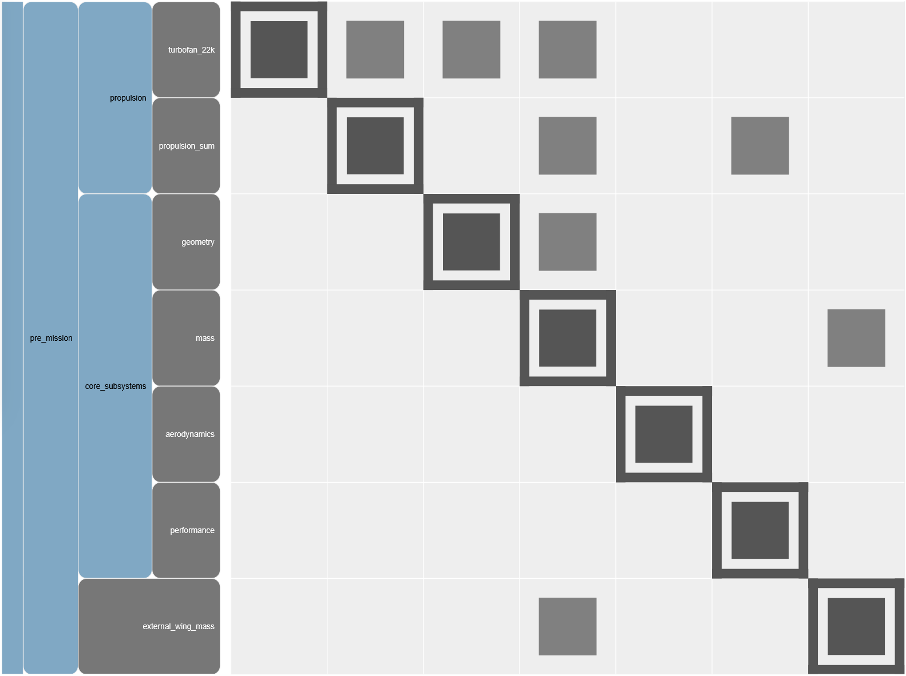
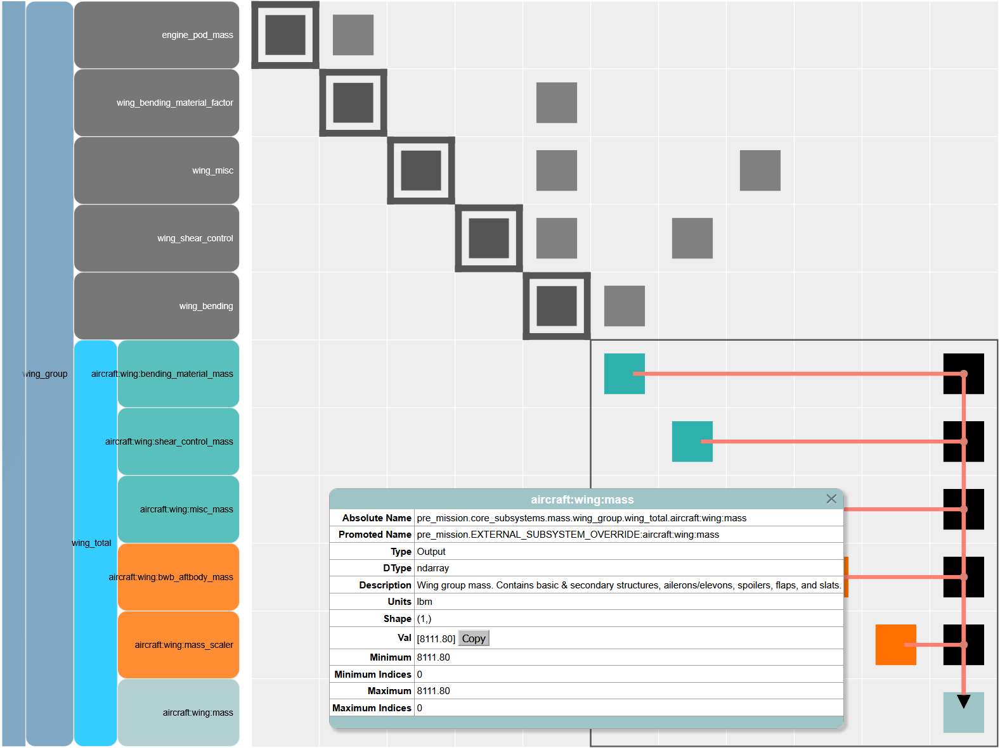
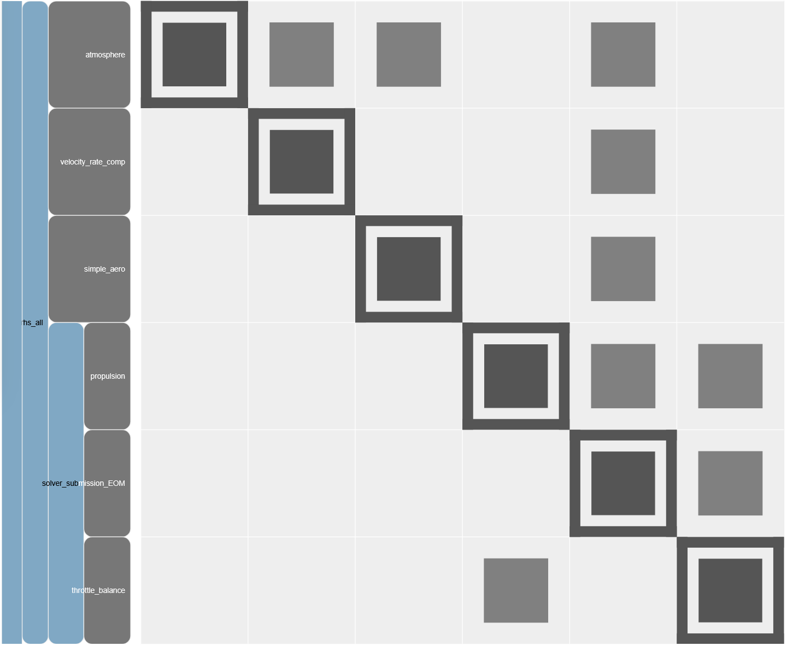

# Testing Cell
from aviary.api import Aircraft, AviaryProblem, SubsystemBuilder
from aviary.models.missions.energy_state_default import phase_info
from aviary.subsystems.aerodynamics.aerodynamics_builder import CoreAerodynamicsBuilder
from aviary.utils.doctape import get_variable_name, glue_variable
from aviary.variable_info.enums import LegacyCode
glue_variable(SubsystemBuilder.__name__, md_code=True)
glue_variable(SubsystemBuilder.__name__ + 's', md_code=True)
glue_variable(AviaryProblem.__name__, md_code=True)
glue_variable(get_variable_name(Aircraft.Wing.MASS), md_code=True)
# glue_variable('wing_mass', Aircraft.Wing.MASS, md_code=True)
glue_variable(get_variable_name(Aircraft.Wing.MASS_SCALER), md_code=True)
glue_variable(get_variable_name(Aircraft.HorizontalTail.MASS), md_code=True)
for key in phase_info:
glue_variable(f'"{key}"')
glue_variable(f'"{CoreAerodynamicsBuilder(code_origin=LegacyCode.GASP).name}"')
SubsystemBuilder
SubsystemBuilders
AviaryProblem
Aircraft.Wing.MASS
Aircraft.Wing.MASS_SCALER
Aircraft.HorizontalTail.MASS
“pre_mission”
“climb”
“cruise”
“descent”
“post_mission”
“aerodynamics”
Creating and Using External Subsystems#
One of Aviary’s key feature is the ability to incorporate additional tools, codes, and equations directly into the aircraft design problem, in the form of external subsystems. This example will demonstrate how to create an external subsystem, and then run a case using multiple external subsystems at once.
The Example Problem#
We will be using the AviaryProblem interface, similar to the custom optimization example, to add two external subsystems and demonstrate a few capabilities.
How to write an (extremely basic) external subsystem
Use an external subsystem to supplement Aviary’s normal calculations
Use an external subsystem to replace one of Aviary’s core methods
The first subsystem, one we will directly create here, will use a different equation to calculate wing weight. This subsystem will be used to replace the wing weight computation Aviary normally performs, but otherwise lets Aviary compute mass as normal. The second external subsystem is the “SimpleAero” example external subsystem example that already exists in Aviary’s code (found here). It models aircraft drag as a simple parabola. We will completely replace the built-in aerodynamics calculations in Aviary with this subsystem.
Creating an External Subsystem#
The first step in creating an external subsystem is to create an OpenMDAO component that performs the calculations we need. For this example, we will create a component that computes wing mass. To keep the code brief, we will create an extremely simple external subsystem, using a nonsense equation to compute wing mass that is not based on any physics or empirical data - take a look at the external subsystem that uses OpenAeroStruct to compute wing mass here for a more complete example. Note that OpenAeroStruct is a separate Python package not included with Aviary that you may have to install in your environment before you can use it.
import openmdao.api as om
from aviary.api import Aircraft, add_aviary_input, add_aviary_output
class CustomMass(om.ExplicitComponent):
"""
A simple component that computes a wing mass as a function of the tail mass, made to demonstrate
the concept of an externally calculated subsystem mass. The equation used is made-up and not
representative of any real-world physics or empirical relations.
"""
def setup(self):
add_aviary_input(self, Aircraft.HorizontalTail.MASS)
add_aviary_input(self, Aircraft.Wing.MASS_SCALER)
add_aviary_output(self, Aircraft.Wing.MASS)
self.declare_partials('*', '*', method='cs')
def compute(self, inputs, outputs):
mass_scaler = inputs[Aircraft.Wing.MASS_SCALER]
tail_mass = inputs[Aircraft.HorizontalTail.MASS]
outputs[Aircraft.Wing.MASS] = 5 * tail_mass * mass_scaler
Note
The above example does not define analytic derivatives for its equations, instead asking OpenMDAO to estimate them using complex step. This is generally not recommended, as even small inaccuracies in derivatives can lead to issues with optimizer convergence. Here, because the focus of the example is on Aviary’s API for external subsystems, any code that is not strictly essential has been cut.
Now that we have an OpenMDAO component that performs the calculations we need, we must wrap it in a form Aviary can understand: a SubsystemBuilder. Our example subsystem is only computing wing mass, which happens during pre-mission. This makes our SubsystemBuilder very simple to create. Most external subsystems are significantly more complicated.
from aviary.api import SubsystemBuilder
class WingMassBuilder(SubsystemBuilder):
_default_name = 'external_wing_mass'
def build_pre_mission(self, aviary_inputs, subsystem_options=None):
return CustomMass()
Running a Mission With External Subsystems#
Now we will actually incorporate our two chosen external subsystems into an Aviary run. This is done by adding their SubsystemBuilders to the AviaryProblem as shown. First we will make some small modifications to the phase_info. Because we want to completely replace the aerodynamics calculations, we will set the aerodynamics method to external, which tells Aviary not to load the core aerodynamics because we are providing our own. We must do this for every phase, which in the phase_info we use is {glue:md}”climb”, {glue:md}”cruise”, and {glue:md}”descent”.
from aviary.models.missions.energy_state_default import phase_info
phase_info['climb']['subsystem_options'] = {'aerodynamics': {'method': 'external'}}
phase_info['cruise']['subsystem_options'] = {'aerodynamics': {'method': 'external'}}
phase_info['descent']['subsystem_options'] = {'aerodynamics': {'method': 'external'}}
Now we will use the custom external subsystem we created, the aerodynamics subsystem we will import from Aviary, and the phase_info we just modified to run our aircraft in Aviary.
from aviary.api import AviaryProblem
from aviary.models.external_subsystems.simple_aero.simple_aero_builder import SimpleAeroBuilder
prob = AviaryProblem(verbosity=0)
prob.load_inputs(
'models/aircraft/advanced_single_aisle/advanced_single_aisle_FLOPS.csv', phase_info
)
prob.load_external_subsystems([WingMassBuilder(), SimpleAeroBuilder()])
prob.check_and_preprocess_inputs()
prob.build_model()
prob.add_driver()
prob.add_design_variables()
prob.add_objective()
prob.setup()
prob.run_aviary_problem()
We can take a closer look at our problem to demonstrate that our external subsystems were incorporated the way we intended. First let’s check the wing mass to see if it matches the equation we defined.
Tail mass: 2091.24 lbm
Wing mass scaler: 0.741
Wing mass: 7750.15 lbm
We can see that the values for Aircraft.Wing.MASS is indeed equal to the equation defined by our external subsystem: 5 * Aircraft.HorizontalTail.MASS * Aircraft.Wing.MASS_SCALER when checked by hand.
Next let’s look at the N2 diagram and view where our external subsystems ended up inside Aviary. First, let’s look inside pre-mission to view our external mass subsystem.

{width=75%}We can see our external wing mass subsystem exists inside the pre-mission alongside Aviary’s core subsystems. There is a feedback loop with our external subsystem, which needs tail mass from the core mass subsystem, and outputs wing mass, which is needed by the core mass subsystem’s mass summation component. In this simple example, the optimizer managed to resolve this feedback, with both components agreeing on the values of variables in the feedback loop. However, in this case adding a solver to Aviary’s pre-mission group is recommended. You can do this via phase_info options.
We can verify that Aviary is correctly using the wing mass our external subsystem computes, and not the internal wing mass calculation in the core mass subsystem, by looking at the component inside the core mass subsystem that would normally compute wing mass.

{width=75%}The popout box is showing more details about that component’s wing mass output. The important thing to see here is the promoted name of the variable, which has the phrase EXTERNAL_SUBSYSTEM_OVERRIDE added to the name of the variable being outputted in the core mass subsystem. Aviary tries to automatically detect variable name duplicates and de-conflict them via overrides. This means that OpenMDAO will not connect the core mass subsystem’s wing mass variable anywhere that Aircraft.Wing.MASS is called, because OpenMDAO will be looking for the string aircraft:wing:mass. Note that this automatic overriding only applies to outputs. The core mass subsystem also has a component that takes wing mass as an input (to sum total aircraft mass), and this input is untouched by Aviary. Therefore, it is correctly connected to our external subsystem, creating the feedback loop we saw earlier.
To go even further in verifying only our subsystem’s mass is being used, let’s compare these two masses:
pre_mission.EXTERNAL_SUBSYSTEM_OVERRIDE:aircraft:wing:mass = 8140.85 lbm
aircraft:wing:mass = 7750.15 lbm
The calculated masses are different, which helps further demonstrate that Aviary is not confusing the “duplicate” computed masses. The value we get for aircraft:wing:mass matches the expected output of our external subsystem that we manually verified earlier.
Now that we have verified that our mass external subsystem was correctly added where we wanted to, let’s look at our aerodynamics subsystem. Below, we are looking inside the cruise phase of the mission. We can see many parts of the mission that are always present, such as the atmosphere, equations of motion, and others. We can see our external aerodynamics subsystem, which has the default name “simple_aero”, and no other aerodynamics components present (the core Aviary aerodynamics subsystem has the default name {glue:md}”aerodynamics”).

{width=75%}